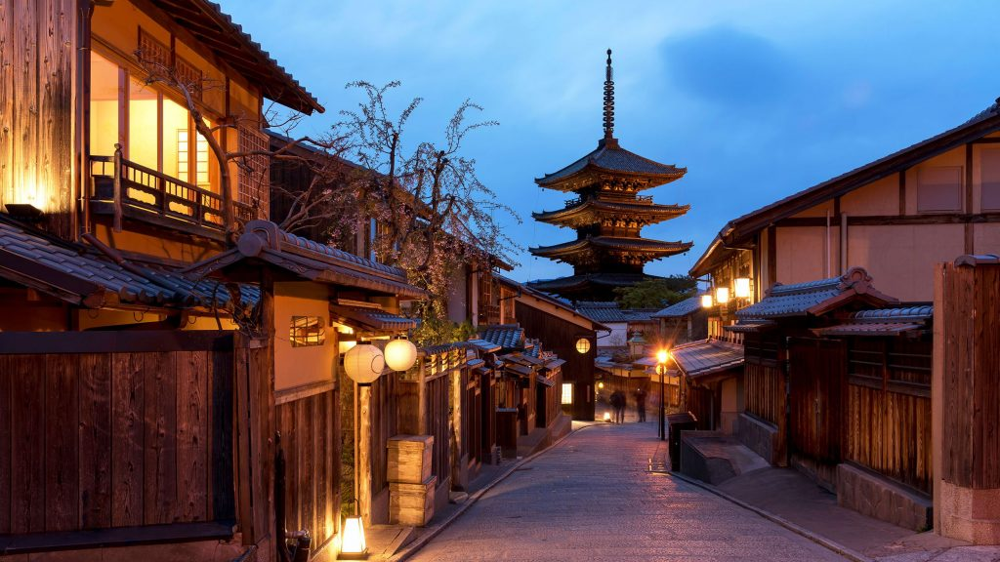
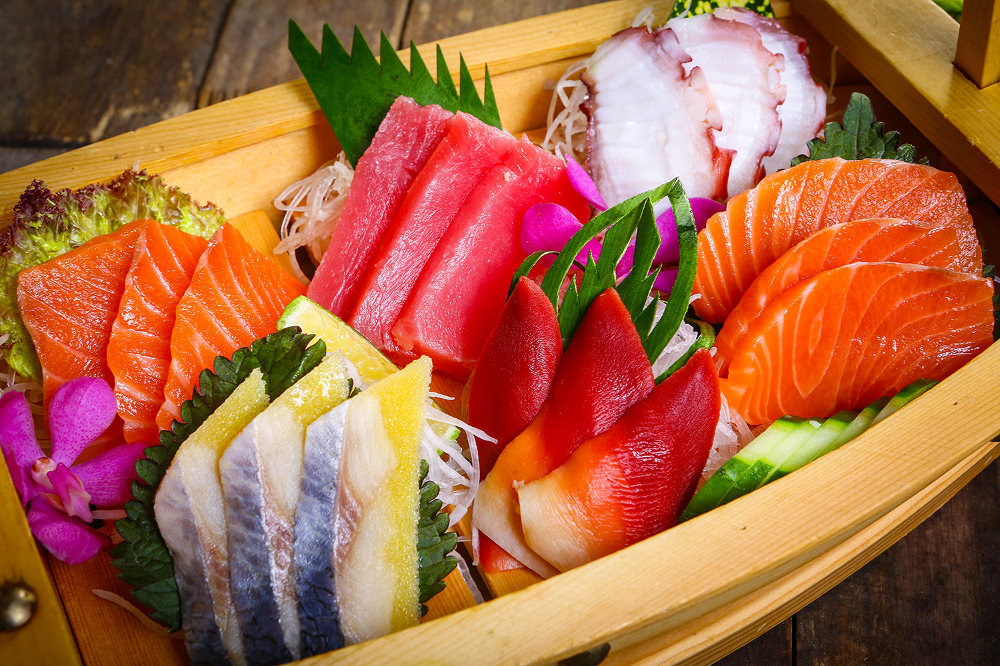
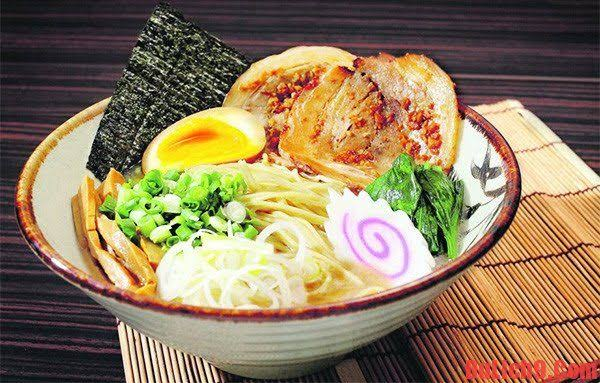

Trải nghiệm bãi biển cát trắng mịn, ngắm hoàng hôn rực rỡ và thưởng thức bức tranh thiên nhiên tuyệt đẹp
Khám phá ngay Đặt tour ngayNgắm nhìn biểu tượng nổi tiếng của xứ sở mặt trời mọc
Thưởng thức mực nháy, ghẹ hấp, tôm hùm tươi ngon vừa được đánh bắt...
đỉnh núi phú sĩ với cảnh quan tuyệt đẹp, nơi bạn có thể ngắm nhìn toàn cảnh biển và thành phố liền
Những danh thắng không thể bỏ qua khi du lịch Nhật Bản
Bãi tắm nổi tiếng với bờ cát trắng tuyệt đẹp và trung tâm nhộn nhịp
Tắm biển Check-in
Khám phá nét đẹp văn hóa truyền thống cổ kính tại Nhật Bản
Tham quan Văn hóaBiểu tượng hùng vĩ và là điểm đến không thể bỏ qua
Khám phá Check-inTinh hoa của sự tối giản, tươi ngon và tinh tế trong từng món ăn


Hải sản tươi sống thái lát mỏng, ăn kèm wasabi và nước tương để giữ trọn vị ngọt tự nhiên của cá.
Cơm trộn giấm kết hợp với cá, tôm hoặc trứng cuốn, là món ăn biểu tượng của Nhật Bản.
Mì nóng trong nước dùng đậm đà (tonkotsu, shoyu, miso), thêm trứng lòng đào và thịt xá xíu.
Tôm và rau củ chiên với lớp bột mỏng giòn nhẹ, chấm cùng nước tentsuyu thanh vị.
Bánh bạch tuộc viên tròn nóng hổi, món ăn đường phố nổi tiếng của Osaka.
Thịt bò vân mỡ đặc trưng, mềm tan trong miệng, nổi tiếng nhất là bò Kobe và Matsusaka.